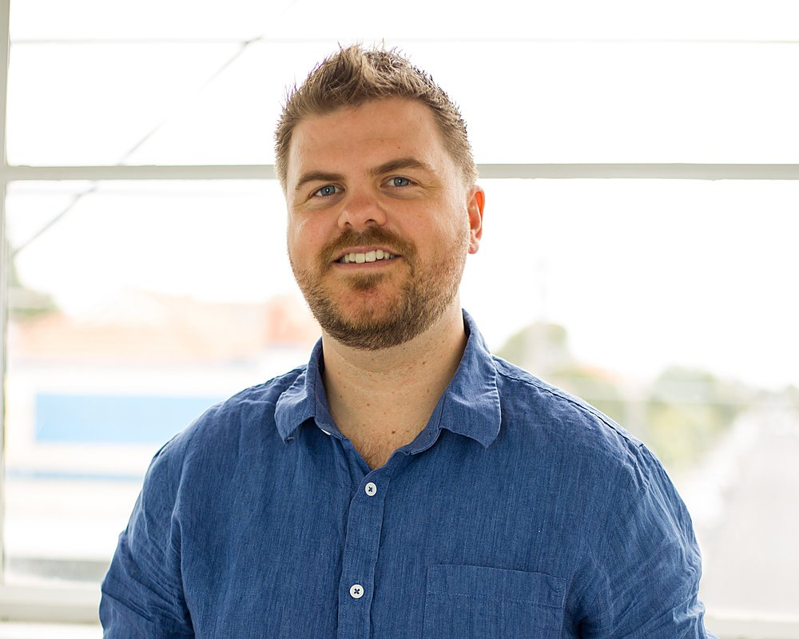

+0%
MoM user growth · GOLFTRAK
I’m Dan, a product and growth lead who builds acquisition, retention and lifecycle strategies that connect marketing activity to revenue — not just reach.
At GolfTrak, I’ve owned growth end-to-end — acquisition, onboarding, subscriptions and retention — turning a six-year build into a growing, paying user base, with every decision tied back to commercial outcomes. As founder of Chat Response, I built automation-led marketing systems for ecommerce, sport and startup brands. Before that, I grew digital audiences at scale as Digital Media Manager at Melbourne Storm.
For Brand Collective, I’d bring a practical mix of growth strategy, segmentation, experimentation, AI-enabled marketing and commercial reporting to help unlock new opportunities across your portfolio of brands.
I’ve also recorded a short video alongside this page to introduce myself properly.
Mapped to the role: turning acquisition, retention and lifecycle activity into measurable revenue, profitability and customer lifetime value across a multi-brand portfolio.
Developing acquisition, retention and lifecycle strategies that drive sustainable customer and revenue growth — from single-brand campaigns to group-level portfolio strategy.
Building segmentation and personalisation strategies that create more meaningful customer experiences, and optimising content and journeys to lift conversion across digital and physical touchpoints.
Leading testing and experimentation programs, and championing AI-enabled marketing, automation and personalisation as part of everyday ways of working.
Owning marketing measurement, attribution and commercial reporting — translating complex data into insight that influences strategic decisions with senior stakeholders.
GolfTrak is where acquisition, retention and lifecycle strategy come together into a single growth P&L. Alongside it, commercial, conversion-led work for other consumer and retail brands.
An iOS golf platform built on computer vision and subscriptions. I own growth end-to-end — acquisition, onboarding, retention and lifecycle — turning a product that had been six years in development into a growing, paying user base, with every decision tied back to commercial outcomes.
More growth work
Rebuilt the customer journey into a genuinely omni-channel, data-driven approach to high-value equipment conversion — from first touch to sale.
Built and tested automated, chatbot-led lead-capture journeys head-to-head to find the most effective conversion and customer-value method.
I enjoy improving acquisition funnels, reducing friction and building stronger onboarding — then using experimentation to help people keep returning to the products and communities they care about.
I move comfortably between roadmap and reality: writing user stories and shipping sprints one week, analysing support conversations, reviews and behavioural trends the next. I’ve worked in lean startup environments where speed and iteration mattered more than process, and in established sporting organisations where audience scale was the game.
Lately that’s meant taking GolfTrak from a six-year build to public launch, layering on subscriptions, and growing the install base through Apple Search Ads, creator partnerships and lifecycle work.

images/dan-about.jpg
Landscape · ~1000×800px
One of the hardest-working digital guys in the NRL — always looking for new, innovative ways to deliver results to fans. A passionate, quick learner who gives the Storm an engaging personality online.
I thought I knew online advertising. I was wrong. Dan has his finger on the pulse of all things ads and is now my go-to. I’m always confident referring work to him.
My go-to for chatbot marketing and advertising. His ability to problem-solve while generating business outcomes is second to none — results we couldn’t have envisaged without him.
I’m always happy to talk through my application, the video message above, or anything on this page — whenever suits.